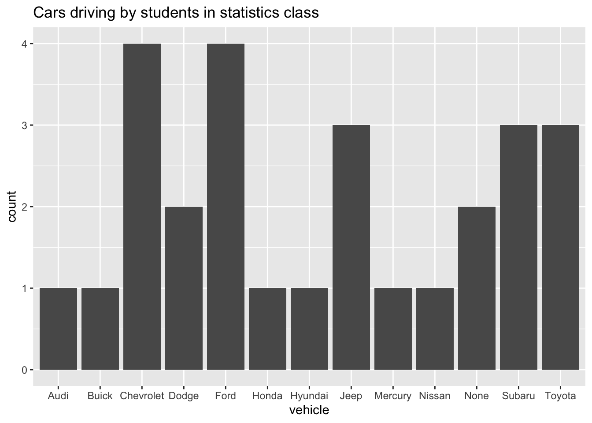
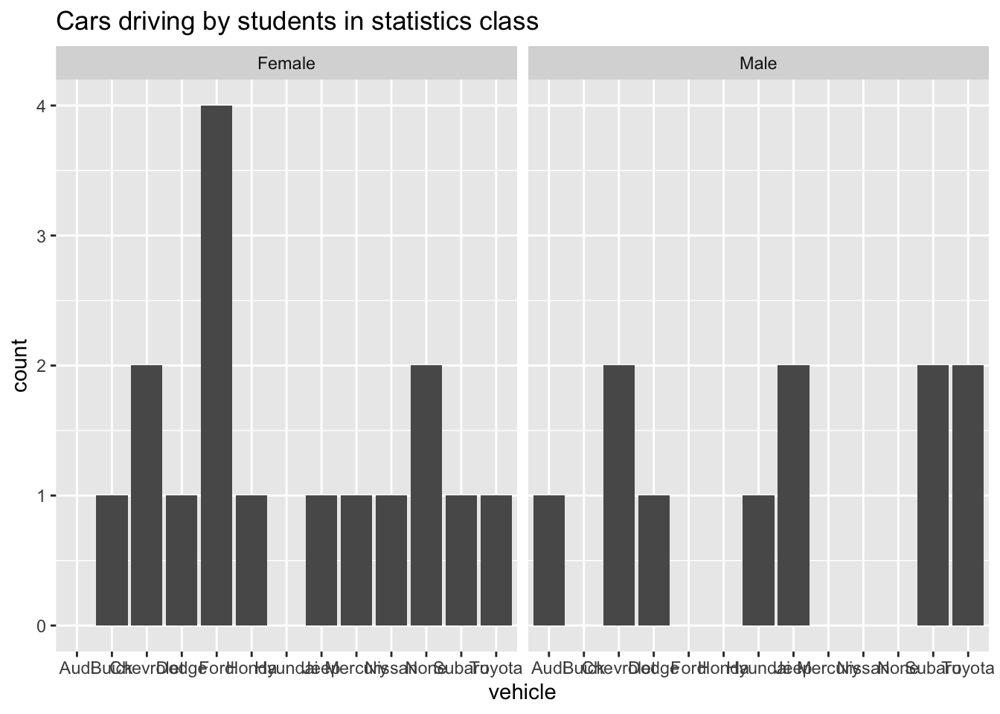
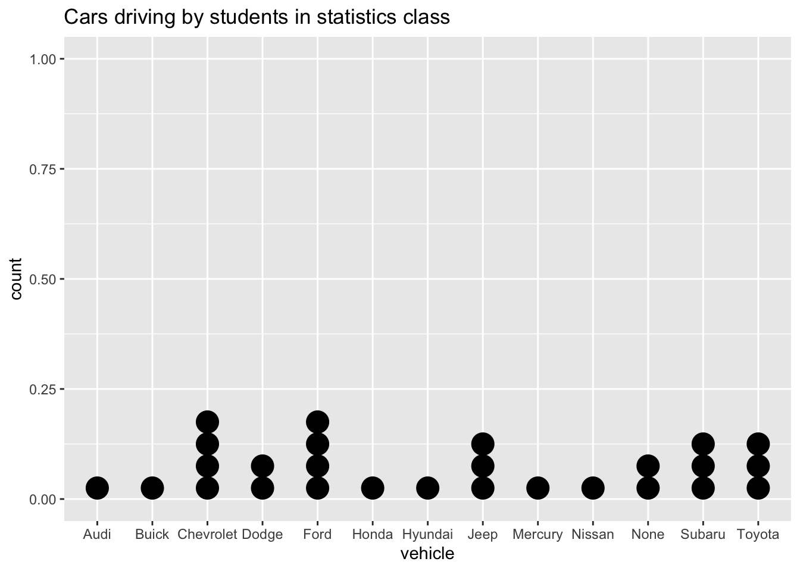
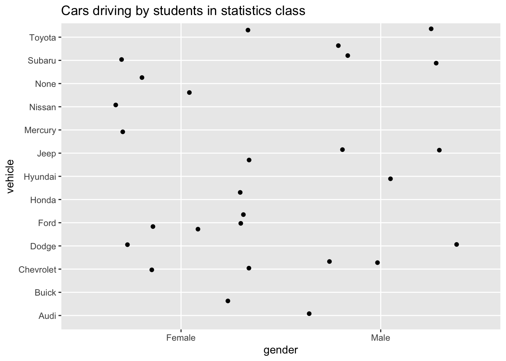
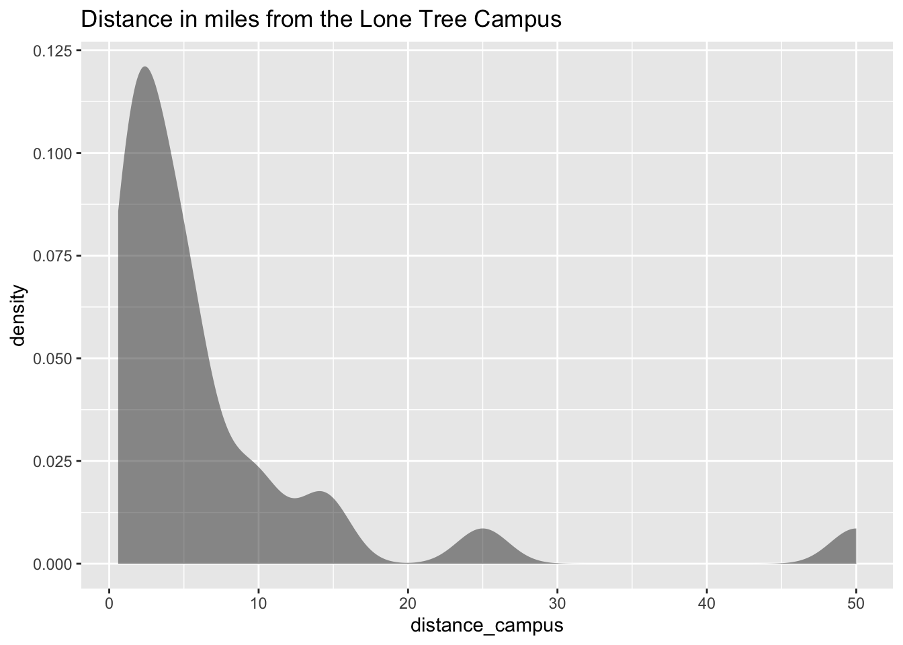
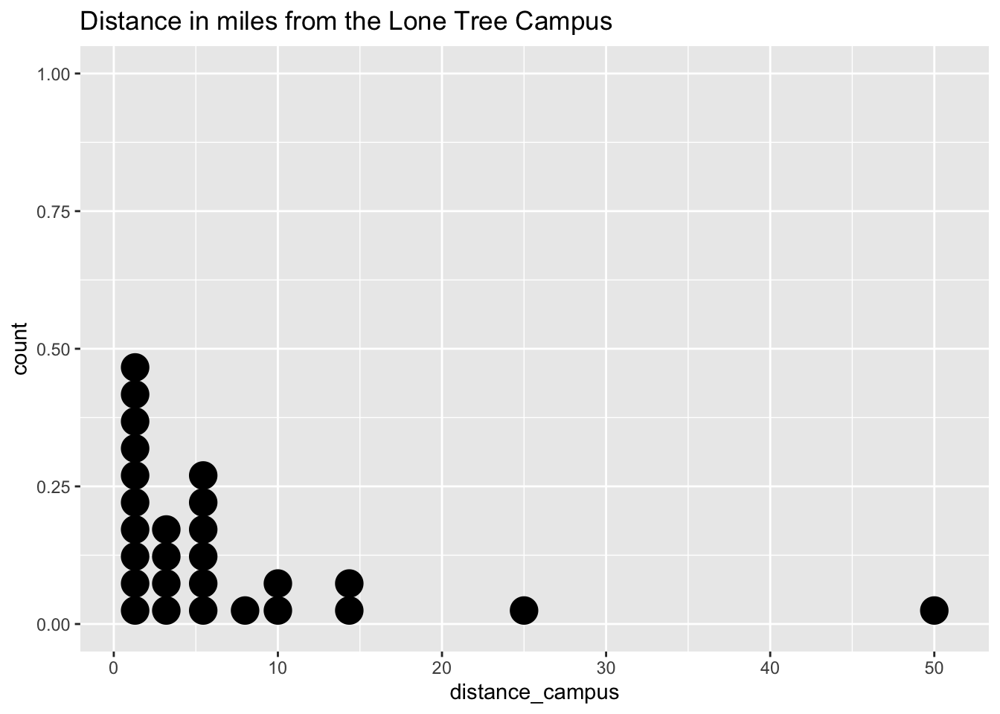
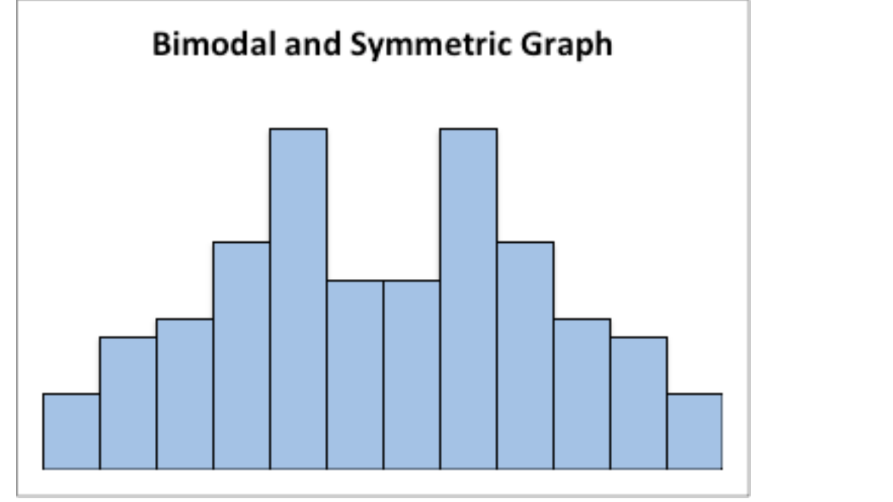
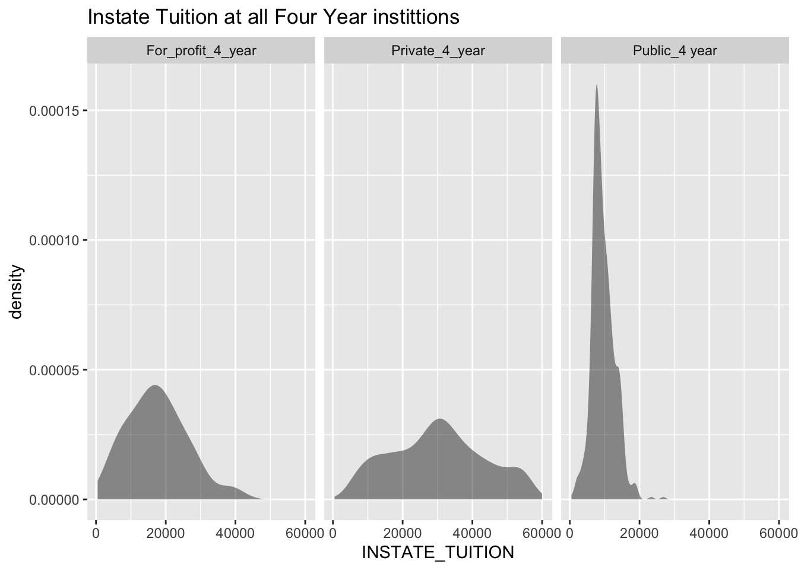
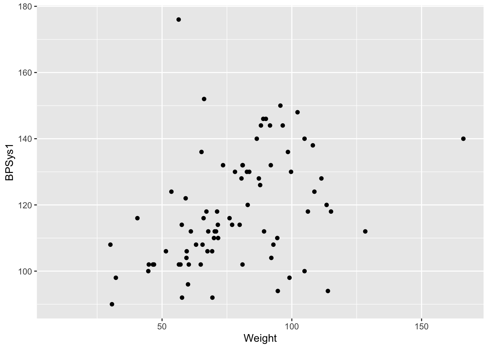
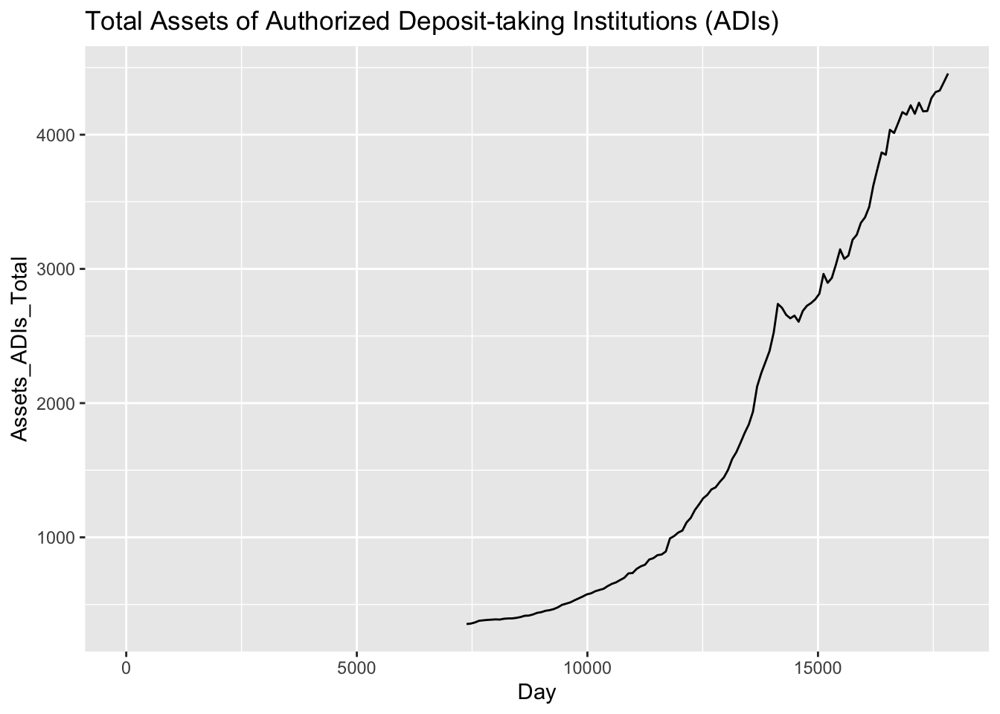

Chapter 2 Graphical Descriptions of Data
In chapter 1, you were introduced to the concepts of population, which again is a collection of all the measurements from the individuals of interest. Remember, in most cases you can’t collect the entire population, so you have to take a sample. Thus, you collect data either through a sample or a census. Now you have a large number of data values. What can you do with them? No one likes to look at just a set of numbers. One thing is to organize the data into a table or graph. Ultimately though, you want to be able to use that graph to interpret the data, to describe the distribution of the data set, and to explore different characteristics of the data. The characteristics that will be discussed in this chapter and the next chapter are:
- Center: middle of the data set, also known as the average.
- Variation: how much the data varies.
- Distribution: shape of the data (symmetric, uniform, or skewed).
- Qualitative data: analysis of the data
- Outliers: data values that are far from the majority of the data.
- Time: changing characteristics of the data over time.
This chapter will focus mostly on using the graphs to understand aspects of the data, and not as much on how to create the graphs. There is technology that will create most of the graphs, though it is important for you to understand the basics of how to create them.
This textbook uses R Studio to perform all graphical and descriptive statistics, and all statistical inference. When using R Studio, every command is performed the same way. You start off with a goal(explanatory variable ~ response variable, data=data frame_name,…)
R Studio uses packages to make calculations easier. For this textbook, you will mostly need the package mosaic. There will be others that you will need on occasion, but you will be told that at the time. Most likely, mosaic is already installed in your R Studio. If you wish to install other packages you use the command install.packages(“name of package”) Where you replace the name of package with the package you wish to install.
Once the package is installed, then you will need to tell R Studio you want to use it every time you start R Studio. The command to tell R Studio you want to use a package is library(“name of package”)
You will need to turn on the package mosaic. The NHANES package contains a data frame that is usfeul. Both are accessed by doing
Back to the basic command goal(explanatory variable ~ response variable, data=data frame_name,…) The goal depends on what you want to do. If you want to create a graph then you would need gf_graphtype(explanatory variable ~ response variable, data=dataframe_name, …). As an example if you want to create a density plot of cholesterol levels on day 2 from a dataframe called Cholesterol, then your command would be gf_density(~day2, data=Cholesterol) You will see more on what the different commands are that you would use. A word about the … at the end of the command. That means there are other things you can do, but that is up to you if you want to actually do them. They do not need to be used if you don’t want to. The following sections will show you how to create the different graphs that are usually completed in an introductory statistics course.
2.1 Qualitative Data
Remember, qualitative data are words describing a characteristic of the individual. There are several different graphs that are used for qualitative data. These graphs include bar graphs, Pareto charts, and pie charts. Bar graphs can be created using a statistical program like R Studio.
Bar graphs or charts consist of the frequencies on one axis and the categories on the other axis. Drawing the bar graph using R is performed using the following command. gf_bar(~explanatory variable, data=Dataframe)
2.1.1 Example: Drawing a Bar Chart
Data was collected for two semesters in a statistics class. The data frame in is the #2.1.1. The command head(data frame) shows the variables and the first few lines of the data set.
Table #2.1.1: Statistis class survey
Class<-read.csv("https://krkozak.github.io/MAT160/class_survey.csv")
head(Class)## vehicle gender distance_campus ice_cream rent
## 1 None Female 1.5 Cookie Dough 724
## 2 Mercury Female 14.7 Sherbet 200
## 3 Ford Female 2.4 Chocolate Brownie. 600
## 4 Toyota Female 5.2 coffee 0
## 5 Jeep Male 2.0 Cookie Dough 600
## 6 Subaru Male 5.0 none 500
## major height winter
## 1 Environmental and Sustainability Studies 61 Liked it
## 2 Administrative Justice 60 Don't like it
## 3 Bio Chem 68 Liked it
## 4 66 Loved it
## 5 Pre-health Careers 71 Loved it
## 6 Finance 72 No opinionCode book for Data Frame Class
Description Survey results from two semesters of statistics classes at Coconino Community College in the years 2018-2019.
Format
This data frame contains the following columns:
vehicle: Type of car a student drives
gender: Self declared gender of a student
distance_campus: how far a student lives from the Lone Tree Campus of Coconino Community College (miles)
ice_cream: favorite ice cream flavor
rent: How much a student pays in rent
major: Students declared major
height: height of the student (inches)
winter: Student’s opinion of winter (Love it, Like it, Don’t like, No opinion)
Source Kozak K (2019). Survey results form surveys collected in statistics class at Coconino Community College.
References Kozak, 2019
Create a bar graph of vehicle type. To do this in R Studio, use the command gf_bar(~variable, data=DataFrame, …), where gf_bar is the goal, vehicle is the name of the response variable (there is no explanatory variable), the dataframe is Class, and a title was added to the graph.
Graph #2.1.1: Bar Graph for Type of Car Data
gf_bar(~vehicle, data=Class, title="Cars driving by students in statistics class")
Notice from the graph, you can see that Chevrolet and Ford are the more popular car, with Jeep, Subura, adn Toyota not far behind. Many types seems to be the lesser used, and tied for last place. However, more data would help to figure this out.
- All graphs should have labels on each axis and a title for the graph.*
The beauty of data frames with multiple variables is that you can answer many questions from the data. Suppose you want to see if gender makes a difference for the type of car a person drives. If you are a car manufacturer, if you knew that certain genders like certain cars, then you would advertise to the different genders. To create a bar graph that separates based on gender, perform the following command in R Studio.
Graph #2.1.2: Bar Graph for Type of Car Data separated by gender
gf_bar(~vehicle|gender, data=Class, title="Cars driving by students in statistics class")
Notice a Ford is driven by females more than any other car, while Chevrolet, Mercury, and Subaru cars are equally driven by males. Obviously a larger sample would be needed to make any conclusions from this data.
There are other types of graphs that can be created for quantitative variables. Another type is known as a dot plot. The command for this graph is as follows.
Graph #2.1.3: Dot Plot for Type of Car Data
gf_dotplot(~vehicle, data=Class, title="Cars driving by students in statistics class")## `stat_bindot()` using `bins = 30`. Pick better value with `binwidth`.
Notice a dot plot is like a bar chart. Both give you the same information. You can also divide a dot plot by gender. Another type of graph that is also useful and similar to the dot plot is a point plot (scatter plot). In this plot you can graph the explanatory variable (response) versus the response variable (explanatory). The command for this in R Studio is as follows.
Graph #2.1.4: Point plot for Type of Car Data versus gender
gf_point(vehicle~gender, data=Class, title="Cars driving by students in statistics class")
The problem with this graph is that if there are multiple females who drive a Ford, only one dot is shown. So it is best to spread the dots out using a plot known as a jitter plot. In a jitter plot the dots are randomly moved off the center line. The command for a jitter plot is as follows:
Graph #2.1.5: Gitter plot for Type of Car Data versus gender
gf_jitter(vehicle~gender, data=Class, title="Cars driving by students in statistics class")
Now you can see that there are 4 females who drive a Ford. There is one female who drives a Honda. Other information about other cars and genders can be seen better than in the point plot and the bar graph. Jitter plots are useful to see how many data values are for each qualitative data values.
There are many other types of graphs that can be used on qualitative data. There are spreadsheet software packages that will create most of them, and it is better to look at them to see how to create then. It depends on your data as to which may be useful, but the bar, dot, and jitter plots are really the most useful.
2.1.2 Homework Section 2.1
- Eyeglassomatic manufactures eyeglasses for different retailers. The number of lenses for different activities is in table #2.1.4.
Table #2.1.2: Data for Eyeglassomatic
Eyeglasses<-read.csv("https://krkozak.github.io/MAT160/eyglasses.csv")
head(Eyeglasses)## activity
## 1 Grind
## 2 Grind
## 3 Grind
## 4 Grind
## 5 Grind
## 6 GrindCode book for Data Frame Eyeglasses
Description Activities that an Eyeglass company performs when making eyeglasses, Grind means ground the lenses and put them in frames, multicoat means put tinting or coatings on lenses and then put them in frames assemble means received frames and lenses from other sources and put them together make frames means made the frames and put lenses in from other sources receive finished means received glasses from other source unknown means do not know where the lenses came from
Format
This data frame contains the following columns:
activity
The activity that is completed to make the eyeglasses by Eyeglassomatic
Source John Matic provided the data from a company he worked with. The company’s name is fictitious, but the data is from an actual company.
References John Matic (2013)
Make a bar chart and a dot plot of this data. State any findings you can see from the graphs.
- Data was collected for two semesters in a statistics class drive. The data frame in is the #2.1.2.
**Table #2.1.2 Data Frame of Statistics Class Survey
Class<-read.csv("https://krkozak.github.io/MAT160/class_survey.csv")
head(Class)## vehicle gender distance_campus ice_cream rent
## 1 None Female 1.5 Cookie Dough 724
## 2 Mercury Female 14.7 Sherbet 200
## 3 Ford Female 2.4 Chocolate Brownie. 600
## 4 Toyota Female 5.2 coffee 0
## 5 Jeep Male 2.0 Cookie Dough 600
## 6 Subaru Male 5.0 none 500
## major height winter
## 1 Environmental and Sustainability Studies 61 Liked it
## 2 Administrative Justice 60 Don't like it
## 3 Bio Chem 68 Liked it
## 4 66 Loved it
## 5 Pre-health Careers 71 Loved it
## 6 Finance 72 No opinionCode book for Data Frame Class see Example #2.1.1
Create a bar graph and dot plot of the variable ice cream. State any findings you can see from the graphs.
- The number of deaths in the US due to carbon monoxide (CO) poisoning from generators from the years 1999 to 2011 are in table #2.1.3 (Hinatov, 2012). Create a bar chart and dot plot of this data. State any findings you see from the graphs.
Table #2.1.3: Data of Number of Deaths Due to CO Poisoning
Area<-read.csv("https://krkozak.github.io/MAT160/area.csv")
head(Area)## deaths
## 1 Urban
## 2 Urban
## 3 Urban
## 4 Urban
## 5 Urban
## 6 Urban
- Data was collected for two semesters in a statistics class drive. The data frame in is the #2.1.4. Create a bar graph and dot plot of the variable major. Create a jitter plot of major and gender. State any findings you can see from the graphs.
**Table #2.1.4 Data Frame of Class Survey
Class<-read.csv("https://krkozak.github.io/MAT160/class_survey.csv")
head(Class)## vehicle gender distance_campus ice_cream rent
## 1 None Female 1.5 Cookie Dough 724
## 2 Mercury Female 14.7 Sherbet 200
## 3 Ford Female 2.4 Chocolate Brownie. 600
## 4 Toyota Female 5.2 coffee 0
## 5 Jeep Male 2.0 Cookie Dough 600
## 6 Subaru Male 5.0 none 500
## major height winter
## 1 Environmental and Sustainability Studies 61 Liked it
## 2 Administrative Justice 60 Don't like it
## 3 Bio Chem 68 Liked it
## 4 66 Loved it
## 5 Pre-health Careers 71 Loved it
## 6 Finance 72 No opinionCode book for Data Frame Class see Example #2.1.1
- Eyeglassomatic manufactures eyeglasses for different retailers. They test to see how many defective lenses they made during the time period of January 1 to March 31. Table #2.1.5 gives the defect and the number of defects. Create a dot plot of the data and then describe what this tells you about what causes the most defects.
Table #2.1.5: Data of Defect Type
Defects<- read.csv("https://krkozak.github.io/MAT160/defects.csv")
head(Defects)## type
## 1 small
## 2 small
## 3 pd
## 4 flaked
## 5 scratch
## 6 spotCode book for Data Frame Defects
Description Types of defects that an Eyeglass company sees in the lenses they make into eyeglasses.
Format
This data frame contains the following columns:
type: The type of defect that is Seen when making eyeglasses by Eyeglassomatic
Source John Matic provided the data from a company he worked with. The company’s name is fictitious, but the data is from an actual company.
References John Matic (2013)
- American National Health and Nutrition Examination (NHANES) surveys is collected every year by the US National Center for Health Statistics (NCHS). The data frame is in table #2.1.6. Create a bar chart of MartialStatus. Create a jitter plot of MaritalStatus versus Education. Describe any findings from the graphs.
Table #2.1.6: Data Frame NHANES
head(NHANES)## # A tibble: 6 x 76
## ID SurveyYr Gender Age AgeDecade AgeMonths Race1 Race3 Education
## <int> <fct> <fct> <int> <fct> <int> <fct> <fct> <fct>
## 1 51624 2009_10 male 34 " 30-39" 409 White <NA> High Sch…
## 2 51624 2009_10 male 34 " 30-39" 409 White <NA> High Sch…
## 3 51624 2009_10 male 34 " 30-39" 409 White <NA> High Sch…
## 4 51625 2009_10 male 4 " 0-9" 49 Other <NA> <NA>
## 5 51630 2009_10 female 49 " 40-49" 596 White <NA> Some Col…
## 6 51638 2009_10 male 9 " 0-9" 115 White <NA> <NA>
## # … with 67 more variables: MaritalStatus <fct>, HHIncome <fct>,
## # HHIncomeMid <int>, Poverty <dbl>, HomeRooms <int>, HomeOwn <fct>,
## # Work <fct>, Weight <dbl>, Length <dbl>, HeadCirc <dbl>, Height <dbl>,
## # BMI <dbl>, BMICatUnder20yrs <fct>, BMI_WHO <fct>, Pulse <int>,
## # BPSysAve <int>, BPDiaAve <int>, BPSys1 <int>, BPDia1 <int>,
## # BPSys2 <int>, BPDia2 <int>, BPSys3 <int>, BPDia3 <int>,
## # Testosterone <dbl>, DirectChol <dbl>, TotChol <dbl>, UrineVol1 <int>,
## # UrineFlow1 <dbl>, UrineVol2 <int>, UrineFlow2 <dbl>, Diabetes <fct>,
## # DiabetesAge <int>, HealthGen <fct>, DaysPhysHlthBad <int>,
## # DaysMentHlthBad <int>, LittleInterest <fct>, Depressed <fct>,
## # nPregnancies <int>, nBabies <int>, Age1stBaby <int>,
## # SleepHrsNight <int>, SleepTrouble <fct>, PhysActive <fct>,
## # PhysActiveDays <int>, TVHrsDay <fct>, CompHrsDay <fct>,
## # TVHrsDayChild <int>, CompHrsDayChild <int>, Alcohol12PlusYr <fct>,
## # AlcoholDay <int>, AlcoholYear <int>, SmokeNow <fct>, Smoke100 <fct>,
## # Smoke100n <fct>, SmokeAge <int>, Marijuana <fct>, AgeFirstMarij <int>,
## # RegularMarij <fct>, AgeRegMarij <int>, HardDrugs <fct>, SexEver <fct>,
## # SexAge <int>, SexNumPartnLife <int>, SexNumPartYear <int>,
## # SameSex <fct>, SexOrientation <fct>, PregnantNow <fct>To view the code book for NHANES, type help(“NHANES”) in R Studio after you load the NHANES packages using library(“NHANES”)
2.2 Quantitative Data
There are several different graphs for quantitative data. With quantitative data, you can talk about how the data is distributed, called a distribution. The shape of the distribution can be described from the graphs.
Histogram: a graph of frequencies (counts) on the vertical axis and classes on the horizontal axis. The height of the rectangles is the frequency and the width is the class width. The width depends on how many classes (bins) are in the histogram. The shape of a histogram is dependent on the number of bins. In R Studio the command to create a histogram is gf_histogram(~response variable, data=Data Frame, title=“title of the graph”). The last part of the command puts a title on the graph. You type in what every you want for the title in the quotes.
Density Plot: Similar to a histogram, except smoothing is created to smooth out the graph. The shape is not dependent on the number of bins so the distribution is easier to determine from the density plot. In R Studio the command to create a density plot is gf_density(~response variable, data=Data Frame, title=“title of the graph”). The last part of the command puts a title on the graph. You type in what every you want for the title in the quotes.
Dot Plot: Dot plots can be created for both quantitative and qualitative variables. For smaller data frames, a dot plot can be useful to determine the shape of the distribution. The command in R Studio is gf_dotplot(~response variable, data=Data Frame, title=“title of the graph”). The last part of the command puts a title on the graph. You type in what every you want for the title in the quotes.
2.2.1 Example: Drawing a Histogram and Density plot **
Data was collected for two semesters in a statistics class drive.
Table #2.2.1: Statistis class survey
Class<-read.csv("https://krkozak.github.io/MAT160/class_survey.csv")
head(Class)## vehicle gender distance_campus ice_cream rent
## 1 None Female 1.5 Cookie Dough 724
## 2 Mercury Female 14.7 Sherbet 200
## 3 Ford Female 2.4 Chocolate Brownie. 600
## 4 Toyota Female 5.2 coffee 0
## 5 Jeep Male 2.0 Cookie Dough 600
## 6 Subaru Male 5.0 none 500
## major height winter
## 1 Environmental and Sustainability Studies 61 Liked it
## 2 Administrative Justice 60 Don't like it
## 3 Bio Chem 68 Liked it
## 4 66 Loved it
## 5 Pre-health Careers 71 Loved it
## 6 Finance 72 No opinionCode book for Data Frame Class See Example #2.1.1.
Draw a histogram, density plot, and a dot plot for the variable the distance a student lives from the Lone Tree Campus of Coconino Community College. Describe the story the graphs tell.
Solution:
Graph #2.2.1: Histogram of Distance a Student Lives from the Lone Tree Campus
gf_histogram(~distance_campus, data=Class, title="Distance in miles from the Lone Tree Campus")
Graph #2.2.2: Density plot of Distance a Student Lives from the Lone Tree Campus
gf_density(~distance_campus, data=Class, title="Distance in miles from the Lone Tree Campus")
Graph #2.2.3: Dot Plot of Distance a Student Lives from the Lone Tree Campus
gf_dotplot(~distance_campus, data=Class, title="Distance in miles from the Lone Tree Campus")## `stat_bindot()` using `bins = 30`. Pick better value with `binwidth`. >
> Notice the histogram, density plot, and dot plot are all very similar, but the density plot is smother. They all tell you similar ideas of the shape of the distribution. Reviewing the graphs you can see that most of the students live within 10 miles of teh Lone Tree Campus, in fact most live within 5 miles from the campus. However, there is a student who lives around 50 miles from the Lone Tree Campus. This is a great deal farther from the rest of the data. This value could be considered an outlier. An outlier is a data value that is far from the rest of the values. It may be an unusual value or a mistake. It is a data value that should be investigated. In this case, the student lived really far from campus, thus the value is not a mistake, and is just very unusual. The density plot is probably the best plot for most data frames.
>
> Notice the histogram, density plot, and dot plot are all very similar, but the density plot is smother. They all tell you similar ideas of the shape of the distribution. Reviewing the graphs you can see that most of the students live within 10 miles of teh Lone Tree Campus, in fact most live within 5 miles from the campus. However, there is a student who lives around 50 miles from the Lone Tree Campus. This is a great deal farther from the rest of the data. This value could be considered an outlier. An outlier is a data value that is far from the rest of the values. It may be an unusual value or a mistake. It is a data value that should be investigated. In this case, the student lived really far from campus, thus the value is not a mistake, and is just very unusual. The density plot is probably the best plot for most data frames.
There are other aspects that can be discussed, but first some other concepts need to be introduced.
** Shapes of the distribution:**
When you look at a distribution, look at the basic shape. There are some basic shapes that are seen in histograms. Realize though that some distributions have no shape. The common shapes are symmetric, skewed, and uniform. Another interest is how many peaks a graph may have. This is known as modal.
Symmetric means that you can fold the graph in half down the middle and the two sides will line up. You can think of the two sides as being mirror images of each other. Skewed means one “tail” of the graph is longer than the other. The graph is skewed in the direction of the longer tail (backwards from what you would expect). A uniform graph has all the bars the same height.
Modal refers to the number of peaks. Unimodal has one peak and bimodal has two peaks. Usually if a graph has more than two peaks, the modal information is not longer of interest.
Other important features to consider are gaps between bars, a repetitive pattern, how spread out is the data, and where the center of the graph is.
Examples of graphs:
<This graph is roughly symmetric and unimodal:
Figure #.2.1: Symetric Distribution

This graph is symmetric and bimodal:
Figure #2.2.2: Symmetric and Bimodal Distribution 
This graph is skewed to the right:
Figure #2.2.3: Skewed Right Distribution

This graph is skewed to the left and has a gap:
Figure #2.2.4: Skewed Left Distribution

This graph is uniform since all the bars are the same height:
Figure #2.2.5: Uniform Distribution

2.2.2 Example: Drawing a Histogram and Density plot **
Data was collected from the Chronicle of Higher Education for tuition from public four year colleges, private four year colleges, and for profit four year colleges. The data frame is in #2.2.2. Draw a density plot of instate tuition levels for all four year institutions, and then separate the density plot for instate tuition based on type of institution. Describe any findings from the graph.
table #2.2.2: Tuition of Four Year Colleges
Tuition<-read.csv("https://krkozak.github.io/MAT160/Tuition_4_year.csv")
head(Tuition)## INSTITUTION
## 1 University of Alaska AnchoragePublic 4-year
## 2 University of Alaska FairbanksPublic 4-year
## 3 University of Alaska SoutheastPublic 4-year
## 4 Alaska Bible CollegePrivate 4-year
## 5 Alaska Pacific UniversityPrivate 4-year
## 6 Alabama Agricultural and Mechanical UniversityPublic 4-year
## TYPE STATE ROOM_BOARD INSTATE_TUITION INSTATE_TOTAL
## 1 Public_4 year AK 12200 7688 19888
## 2 Public_4 year AK 8930 8087 17017
## 3 Public_4 year AK 9200 7092 16292
## 4 Private_4_year AK 5700 9300 15000
## 5 Private_4_year AK 7300 20830 28130
## 6 Public_4 year AL 8379 9698 18077
## OUTOFSTATE_TUITION OUTOFSTATE_TOTAL
## 1 23858 36058
## 2 24257 33187
## 3 19404 28604
## 4 9300 15000
## 5 20830 28130
## 6 17918 26297Code book for Data Frame Tuition
Description Cost of four year institutions.
Format
This data frame contains the following columns:
INSTITUTION: Name of four year institution
TYPE: Type of four year institution, Public_4_year, Private_4_year, For_profit_4_year.
STATE: What state the institution resides
ROOM_BOARD: The cost of room and board at the institution ($)
INSTATE_TUTION: The cost of instate tuition ($)
INSTATE_TOTAL: The cost of room and board and instate tuition ($ per year)
OUTOFSTATE_TUTION: The cost of out of state tuition ($ per year)
OUTOFSTATE_TOTAL: The cost of room and board and out of state tuition ($ per year)
Source * Tuition and Fees, 1998-99 Through 2018-19. (2018, December 31). Retrieved from https://www.chronicle.com/interactives/tuition-and-fees
References Chronicle of Higher Education *, December 31, 2018.
** Soultion **
Graph #2.2.4: Density Plot for Instate Tuition Levels at all Four-Year Colleges
gf_density(~INSTATE_TUITION, data=Tuition, title="Instate Tuition at all Four Year instittions")
Graph #2.2.5: Density Plot for Instate Tuition Levels at all Four-Year Colleges
gf_density(~INSTATE_TUITION|TYPE, data=Tuition, title="Instate Tuition at all Four Year instittions") > > The distribution is skewed right, with no gaps. Most institutions in state is less than $20,000 per year though some go as high as $60,00 per year. When separaated by public versus private and for profit, most public are much less than $20,000 per year while private four year cost around $30,000 per year, and for profit are around $20,000 per year.
There are other types of graphs for quantitative data. They will be explored in the next section.
2.2.3 Homework Section 2.2
- The weekly median incomes of males and females for specific occupations, are given in table #2.2.3 (CPS News Releases. (n.d.). Retrieved July 8, 2019, from https://www.bls.gov/cps/). Create a density plot for males and females. Discuss any findings from the graph. Note: to put two graphs on the same axis, type %>% at the end of the first command and then type the command for the seond graph on the next line. Also, use fill=“pick a color” in the command to plot the graphs with different colors so the two graphs can be easier to distinguish.
table #2.2.3: Weekly median wages for certain occupations
Wages<- read.csv("https://krkozak.github.io/MAT160/wages.csv")
head(Wages)## Occupation Numworkers
## 1 Management, professional, and related occupations 48808
## 2 Management, business, and financial operations occupations 19863
## 3 Management occupations 13477
## 4 Chief executives 1098
## 5 General and operations managers 939
## 6 Legislators 14
## median_wage male_worker male_wage female_worker female_wage
## 1 1246 23685 1468 25123 1078
## 2 1355 10668 1537 9195 1168
## 3 1429 7754 1585 5724 1236
## 4 2291 790 2488 307 1736
## 5 1338 656 1427 283 1139
## 6 NA 10 NA 4 NACode book for Data Frame Wages
Description Median weekly earnings of full-time wage and salary workers by detailed occupation and sex. The Current Population Survey (CPS) is a monthly survey of households conducted by the Bureau of Census for the Bureau of Labor Statistics. It provides a comprehensive body of data on the labor force, employment, unemployment, persons not in the labor force, hours of work, earnings, and other demographic and labor force characteristics.
Format
This data frame contains the following columns:
Occupation: Occupations of workers.
Numworkers: The number of workers in each occupation (in thousands of workers)
median_wage: Median weekly wage ($)
male_worker: number of male workers (in thousands of workers)
male_wage: Median weekly wage of male workers ($)
female_worker: number of female workers (in thousands of workers)
female_wageL Median weekly wage of female workers ($)
Source CPS News Releases. (n.d.). Retrieved July 8, 2019, from https://www.bls.gov/cps/
References Current Population Survey (CPS) retrieved July 8, 2019.
- The density of people per square kilometer for certain countries is in table #2.2.4 (World Bank, 2019). Create density plot of density for just Sub-Saharan Africa. Describe what story the graph tells.
Table #2.2.4: Data of Density of People per Square Kilometer
Density<- read.csv("https://krkozak.github.io/MAT160/Density.csv")
head(Density)## Country_Name Country_Code Region IncomeGroup
## 1 Aruba ABW Latin America & Caribbean High income
## 2 Afghanistan AFG South Asia Low income
## 3 Angola AGO Sub-Saharan Africa Lower middle income
## 4 Albania ALB Europe & Central Asia Upper middle income
## 5 Andorra AND Europe & Central Asia High income
## 6 Arab World ARB
## y1961 y1962 y1963 y1964 y1965 y1966
## 1 307.988889 312.361111 314.972222 316.844444 318.666667 320.638889
## 2 14.044987 14.323808 14.617537 14.926295 15.250314 15.585020
## 3 4.436891 4.498708 4.555593 4.600180 4.628676 4.637213
## 4 60.576642 62.456898 64.329234 66.209307 68.058066 69.874927
## 5 30.585106 32.702128 34.919149 37.168085 39.465957 41.802128
## 6 8.430860 8.663154 8.903441 9.152526 9.410965 9.679951
## y1967 y1968 y1969 y1970 y1971 y1972
## 1 322.527778 324.366667 326.255556 328.127778 330.222222 332.444444
## 2 15.929795 16.293023 16.686236 17.114913 17.577191 18.060863
## 3 4.631622 4.629544 4.654892 4.724765 4.845413 5.012073
## 4 71.737153 73.805547 75.974270 77.937190 79.848650 81.865912
## 5 44.165957 46.574468 49.059574 51.651064 54.380851 57.217021
## 6 9.959490 10.247580 10.541383 10.839409 11.140162 11.445801
## y1973 y1974 y1975 y1976 y1977 y1978
## 1 334.683333 336.266667 336.983333 336.588889 335.366667 333.905556
## 2 18.547565 19.013188 19.436265 19.825220 20.174779 20.435006
## 3 5.211328 5.423422 5.634074 5.839022 6.042941 6.249063
## 4 83.823066 85.770949 87.767555 89.727226 91.735255 93.659343
## 5 60.068085 62.808511 65.329787 67.610638 69.725532 71.780851
## 6 11.762925 12.100336 12.464221 12.856964 13.276051 13.716559
## y1979 y1980 y1981 y1982 y1983 y1984
## 1 333.222222 333.866667 336.483333 340.805556 345.561111 349.088889
## 2 20.542009 20.458461 20.175341 19.732451 19.204316 18.693582
## 3 6.463517 6.690695 6.930654 7.181319 7.442124 7.712163
## 4 95.541314 97.518139 99.491095 101.615985 103.794161 106.001058
## 5 74.080851 76.738298 79.787234 83.221277 86.951064 90.863830
## 6 14.171137 14.634158 15.103942 15.581254 16.065812 16.557944
## y1985 y1986 y1987 y1988 y1989 y1990
## 1 350.144444 348.022222 343.516667 339.327778 339.066667 345.272222
## 2 18.286015 17.976563 17.774920 17.795553 18.179820 19.012205
## 3 7.990693 8.277943 8.574035 8.877878 9.188078 9.503799
## 4 108.202993 110.315146 112.540329 114.683796 117.808139 119.946788
## 5 94.893617 98.972340 103.095745 107.306383 111.591489 115.976596
## 6 17.057705 17.563945 18.075438 18.592082 19.114029 19.817110
## y1991 y1992 y1993 y1994 y1995 y1996 y1997
## 1 359.011111 379.08333 402.80000 426.11111 446.24444 462.22222 474.72778
## 2 20.370396 22.18783 24.22664 26.15527 27.74049 28.87822 29.64974
## 3 9.825059 10.15270 10.48773 10.83159 11.18570 11.55107 11.92875
## 4 119.225912 118.50507 117.78420 117.06336 116.34248 115.62164 114.90077
## 5 120.576596 125.29362 129.72553 133.35532 135.85106 136.93617 136.86596
## 6 20.358106 20.73408 21.29364 21.84602 22.52760 23.05216 23.57027
## y1998 y1999 y2000 y2001 y2002 y2003 y2004
## 1 484.87222 494.47222 504.73889 516.10000 527.73333 538.98333 548.53889
## 2 30.23277 30.89612 31.82911 33.09590 34.61810 36.27251 37.87440
## 3 12.32021 12.72709 13.15110 13.59249 14.05263 14.53556 15.04624
## 4 114.17993 113.45905 112.73821 111.68515 111.35073 110.93489 110.47223
## 5 136.47234 136.95745 139.12766 143.27872 149.04043 155.70638 162.22128
## 6 24.08237 24.60020 25.12980 25.67166 26.22642 26.80081 27.40153
## y2005 y2006 y2007 y2008 y2009 y2010 y2011
## 1 555.72778 560.18889 562.34444 563.10000 563.63889 564.82778 566.92222
## 2 39.29522 40.48808 41.51049 42.46282 43.49296 44.70408 46.13150
## 3 15.58803 16.16259 16.76856 17.40245 18.05910 18.73446 19.42782
## 4 109.90828 109.21704 108.39478 107.56620 106.84376 106.31463 106.02901
## 5 167.80213 172.32553 175.92340 178.42979 179.70851 179.67872 178.18511
## 6 28.03371 28.69994 29.39751 30.11889 30.85858 31.59402 32.33012
## y2012 y2013 y2014 y2015 y2016 y2017 y2018
## 1 569.77778 573.10556 576.52222 579.67222 582.62222 585.36667 588.02778
## 2 47.73056 49.42804 51.11478 52.71207 54.19711 55.59599 56.93776
## 3 20.13951 20.86771 21.61047 22.36655 23.13506 23.91654 24.71305
## 4 105.85405 105.66029 105.44175 105.13515 104.96719 104.87069 104.61226
## 5 175.37660 171.85957 168.53830 165.98085 164.46170 163.83191 163.84255
## 6 33.06767 33.80379 34.53398 35.25690 35.96876 36.66980 37.37237Code book for Data Frame Density
Description Population density of all countries in the world
Format
This data frame contains the following columns:
Country_Name: The name of countries or regions around the world
Country_Code: The 3 letter code for a country or region
Region: World Banks classification of where the country is in the world
Incomegroup: World Banks classification of what income level the country is considered to be
y1961-y2018: population density for the years 1961 through 2018, people per sq. km of land area, population density is midyear population divided by land area in square kilometers. Population is based on the de facto definition of population, which counts all residents regardless of legal status or citizenship–except for refugees not permanently settled in the country of asylum, who are generally considered part of the population of their country of origin. Land area is a country’s total area, excluding area under inland water bodies, national claims to continental shelf, and exclusive economic zones. In most cases the definition of inland water bodies includes major rivers and lakes.
Source Population density (people per sq. km of land area). (n.d.). Retrieved July 9, 2019, from https://data.worldbank.org/indicator/EN.POP.DNST
References Food and Agriculture Organization and World Bank population estimates.
Since the Density dataframe is for all countries, a new data frame must be created with just Su-Saharan Afica. This is created by using the following command
Africa<-
Density%>%
filter(Region=="Sub-Saharan Africa")
head(Africa)## Country_Name Country_Code Region
## 1 Angola AGO Sub-Saharan Africa
## 2 Burundi BDI Sub-Saharan Africa
## 3 Benin BEN Sub-Saharan Africa
## 4 Burkina Faso BFA Sub-Saharan Africa
## 5 Botswana BWA Sub-Saharan Africa
## 6 Central African Republic CAF Sub-Saharan Africa
## IncomeGroup y1961 y1962 y1963 y1964
## 1 Lower middle income 4.4368910 4.4987078 4.5555932 4.6001797
## 2 Low income 111.0762461 113.2134346 115.4371885 117.8461838
## 3 Low income 21.8682778 22.1966655 22.5510731 22.9333540
## 4 Low income 17.8895468 18.1298465 18.3765387 18.6362939
## 5 Upper middle income 0.9046371 0.9242108 0.9452208 0.9667267
## 6 Low income 2.4496228 2.4911073 2.5351857 2.5821310
## y1965 y1966 y1967 y1968 y1969 y1970
## 1 4.6286757 4.637213 4.631622 4.629544 4.654892 4.724765
## 2 120.4976246 123.461449 126.682944 129.942640 132.940187 135.477959
## 3 23.3447677 23.786440 24.257778 24.756917 25.280782 25.827776
## 4 18.9139985 19.211853 19.528578 19.861261 20.205314 20.557749
## 5 0.9881143 1.009235 1.030635 1.053318 1.078644 1.107609
## 6 2.6320363 2.685510 2.742146 2.799759 2.855406 2.907227
## y1971 y1972 y1973 y1974 y1975 y1976
## 1 4.845413 5.012073 5.211328 5.423422 5.634074 5.839022
## 2 137.460942 139.005685 140.386527 141.994977 144.115265 146.840771
## 3 26.397410 26.991548 27.613294 28.267222 28.956767 29.684046
## 4 20.918790 21.290837 21.675742 22.076173 22.494682 22.931422
## 5 1.140485 1.177090 1.217356 1.261116 1.308127 1.358635
## 6 2.954377 2.998141 3.041595 3.089004 3.143547 3.205583
## y1977 y1978 y1979 y1980 y1981 y1982
## 1 6.042941 6.249063 6.463517 6.690695 6.930654 7.181319
## 2 150.095210 153.787617 157.758333 161.888551 166.141744 170.550000
## 3 30.449087 31.251667 32.090511 32.965280 33.878397 34.832512
## 4 23.387920 23.869952 24.384708 24.937292 25.530556 26.163213
## 5 1.412540 1.468895 1.526432 1.584296 1.641713 1.699001
## 6 3.274453 3.351092 3.436349 3.530380 3.634855 3.748648
## y1983 y1984 y1985 y1986 y1987 y1988
## 1 7.442124 7.712163 7.990693 8.277943 8.574035 8.877878
## 2 175.137578 179.949494 185.001441 190.293731 195.760826 201.273287
## 3 35.827856 36.864305 37.943429 39.060890 40.220495 41.440688
## 4 26.830793 27.526469 28.245274 28.986455 29.751729 30.542050
## 5 1.757680 1.819983 1.887287 1.960269 2.037842 2.117529
## 6 3.865801 3.978269 4.080659 4.169895 4.248676 4.324333
## y1989 y1990 y1991 y1992 y1993 y1994
## 1 9.188078 9.503799 9.825059 10.152696 10.487727 10.831593
## 2 206.661565 211.797391 216.702726 221.400506 225.780880 229.710553
## 3 42.745796 44.151259 45.667781 47.284525 48.969165 50.675949
## 4 31.359002 32.204072 33.077792 33.980676 34.914020 35.879342
## 5 2.195903 2.270492 2.340307 2.406003 2.468742 2.530410
## 6 4.407419 4.505336 4.620548 4.750130 4.889642 5.032288
## y1995 y1996 y1997 y1998 y1999 y2000
## 1 11.185695 11.551070 11.928748 12.320206 12.727095 13.151097
## 2 233.140304 235.985631 238.400701 240.870794 244.046885 248.398403
## 3 52.372810 54.046284 55.708044 57.380853 59.099840 60.889952
## 4 36.878209 37.912080 38.982259 40.090365 41.237942 42.426689
## 5 2.592370 2.655109 2.718093 2.780555 2.841325 2.899677
## 6 5.172969 5.310336 5.445497 5.578818 5.711281 5.843570
## y2001 y2002 y2003 y2004 y2005 y2006
## 1 13.592487 14.052633 14.535557 15.046238 15.588034 16.162590
## 2 254.110008 261.063590 269.048053 277.713902 286.793692 296.255802
## 3 62.759250 64.698421 66.695238 68.730082 70.789509 72.870672
## 4 43.657116 44.930921 46.252270 47.626349 49.056762 50.545234
## 5 2.954984 3.007856 3.060360 3.115288 3.174489 3.239476
## 6 5.974539 6.103130 6.230025 6.356344 6.482362 6.610275
## y2007 y2008 y2009 y2010 y2011 y2012
## 1 16.768559 17.402450 18.059101 18.734456 19.427818 20.139513
## 2 306.160981 316.436994 327.011994 337.834969 348.847586 360.046262
## 3 74.980427 77.127714 79.325186 81.582645 83.902359 86.282795
## 4 52.090720 53.690515 55.340270 57.036612 58.778914 60.567420
## 5 3.309264 3.380162 3.446964 3.506264 3.556194 3.598805
## 6 6.738595 6.859556 6.962703 7.041587 7.092741 7.121280
## y2013 y2014 y2015 y2016 y2017 y2018
## 1 20.867715 21.610475 22.366553 23.135064 23.916538 24.713052
## 2 371.506581 383.344899 395.639797 408.411137 421.613084 435.178271
## 3 88.724619 91.227758 93.791699 96.417763 99.106101 101.853920
## 4 62.400493 64.276378 66.193801 68.151966 70.150892 72.191283
## 5 3.639363 3.685378 3.742022 3.811240 3.890967 3.977425
## 6 7.139783 7.165840 7.212382 7.283841 7.377489 7.490412
- The Affordable Care Act created a market place for individuals to purchase health care plans. In 2014, the premiums for a 27 year old for the different levels health insurance are given in table #2.2.5 ("Health insurance marketplace," 2013). Create a density plot of bronze_lowest, then silver_lowest, and gold_lowest all on the same aces. Use %>% at the end of each command. Describe the story the graphs tells.
Table #2.2.5: Data of Health Insurance Premiums
Insurance<- read.csv("https://krkozak.github.io/MAT160/insurance.csv")
head(Insurance)## state average_QHP bronze_lowest silver_lowest gold_lowest catastrophic
## 1 AK 34 254 312 401 236
## 2 AL 7 162 200 248 138
## 3 AR 28 181 231 263 135
## 4 AZ 106 141 164 187 107
## 5 DE 19 203 234 282 137
## 6 FL 102 169 200 229 132
## second_silver_pretax second_silver_posttax lowest_bronze_posttax
## 1 312 107 48
## 2 209 145 98
## 3 241 145 85
## 4 166 145 120
## 5 237 145 111
## 6 218 145 96
## silver_family_pretax silver_family_posttax bronze_family_posttax
## 1 1131 205 0
## 2 757 282 112
## 3 873 282 64
## 4 600 282 192
## 5 859 282 158
## 6 789 282 104Code book for Data Frame Insurance
Description The Affordable Care Act created a market place for individuals to purchase health care plans.The data is from 2014
Format
This data frame contains the following columns:
state: state of insured.
average_QHP: The number of qualified health plans
bronze_lowest: premium for the lowest bronze level of insurance for a single person ($)
silver_lowest: premium for the lowest silver level of insurance for a single person ($)
gold_lowest: premium for the lowest gold level of insurance for a single person ($)
catastrophic: premium for the catastrophic level of insurance for a single person ($)
second_silver_pretax: premium for the second silver level of insurance for a single person pretax ($)
second_silver_posttax: premium for the second silver level of insurance for a single person posttax ($)
second_bronze_posttax: premium for the lowest bronze level of insurance for a single person posttax ($)
silver_family_pretax: premium for the silver level of insurance for a family pretax ($)
silver_family_posttax: premium for the silver level of insurance for a family posttax ($)
bronze_family_posttax: premium for the bronze level of insurance for a family posttax ($)
Source Health Insurance Market Place Retrieved from website: http://aspe.hhs.gov/health/reports/2013/marketplacepremiums/ib_premiumslandscape.pdf premiums for 2014.
References Department of Health and Human Services, ASPE. (2013). Health insurance marketplace
- Students in a statistics class took their first test. The following are the scores they earned. Create a density plot for grades. Describe the shape of the distribution.
Table #2.2.6: Data of Test 1 Grades
Firsttest_1<- read.csv("https://krkozak.github.io/MAT160/firsttest_1.csv")
head(Firsttest_1)## grades
## 1 80
## 2 79
## 3 89
## 4 74
## 5 73
## 6 67
- Students in a statistics class took their first test. The following are the scores they earned. Create a desnity plot for grades. Describe the shape of the distribution. Compare to the graph in question 4.
Table #2.2.7: Data of Test 1 Grades
Firsttest_2<- read.csv("https://krkozak.github.io/MAT160/firsttest_2.csv")
head(Firsttest_2)## grades
## 1 67
## 2 67
## 3 76
## 4 47
## 5 85
## 6 70
2.3 Other Graphical Representations of Data
There are many other types of graphs. Some of the more common ones are the point plot (scatter plot), and a time-series plot. There are also many different graphs that have emerged lately for qualitative data. Many are found in publications and websites. The following is a description of the point plot (scatter plot), and the time-series plot.
Point Plots or Scatter Plot
Sometimes you have two different variables and you want to see if they are related in any way. A scatter plot helps you to see what the relationship would look like. A scatter plot is just a plotting of the ordered pairs.
2.3.1 Example: Scatter Plot**
Is there a relationship between systolic blood pressure and weight? To answer this question some data is needed. The data frame NHANES contains this data, but given the size of the data frame, it may be not be very useful to look at the graph of all the data. It makes sense to take a sample form the data frame. A random sample is the better type of sample to take. Once the sample is taken, then a scatter plot can be created. The R studio command for a scatter plot is gf_point(response variable ~ explanatory variable, data= Data Frame)
Solution:
Table #2.3.1: Random sample of size 100 from the data frame NHANES
sample_NHANES <-
NHANES%>%
sample_n(size = 100)
head(sample_NHANES)## # A tibble: 6 x 76
## ID SurveyYr Gender Age AgeDecade AgeMonths Race1 Race3 Education
## <int> <fct> <fct> <int> <fct> <int> <fct> <fct> <fct>
## 1 61876 2009_10 female 28 " 20-29" 340 Mexi… <NA> College …
## 2 57970 2009_10 male 5 " 0-9" 68 White <NA> <NA>
## 3 66246 2011_12 male 40 " 40-49" NA White White 9 - 11th…
## 4 65177 2011_12 male 22 " 20-29" NA White White Some Col…
## 5 65068 2011_12 male 0 " 0-9" 8 Black Black <NA>
## 6 55580 2009_10 female 60 " 60-69" 730 White <NA> 9 - 11th…
## # … with 67 more variables: MaritalStatus <fct>, HHIncome <fct>,
## # HHIncomeMid <int>, Poverty <dbl>, HomeRooms <int>, HomeOwn <fct>,
## # Work <fct>, Weight <dbl>, Length <dbl>, HeadCirc <dbl>, Height <dbl>,
## # BMI <dbl>, BMICatUnder20yrs <fct>, BMI_WHO <fct>, Pulse <int>,
## # BPSysAve <int>, BPDiaAve <int>, BPSys1 <int>, BPDia1 <int>,
## # BPSys2 <int>, BPDia2 <int>, BPSys3 <int>, BPDia3 <int>,
## # Testosterone <dbl>, DirectChol <dbl>, TotChol <dbl>, UrineVol1 <int>,
## # UrineFlow1 <dbl>, UrineVol2 <int>, UrineFlow2 <dbl>, Diabetes <fct>,
## # DiabetesAge <int>, HealthGen <fct>, DaysPhysHlthBad <int>,
## # DaysMentHlthBad <int>, LittleInterest <fct>, Depressed <fct>,
## # nPregnancies <int>, nBabies <int>, Age1stBaby <int>,
## # SleepHrsNight <int>, SleepTrouble <fct>, PhysActive <fct>,
## # PhysActiveDays <int>, TVHrsDay <fct>, CompHrsDay <fct>,
## # TVHrsDayChild <int>, CompHrsDayChild <int>, Alcohol12PlusYr <fct>,
## # AlcoholDay <int>, AlcoholYear <int>, SmokeNow <fct>, Smoke100 <fct>,
## # Smoke100n <fct>, SmokeAge <int>, Marijuana <fct>, AgeFirstMarij <int>,
## # RegularMarij <fct>, AgeRegMarij <int>, HardDrugs <fct>, SexEver <fct>,
## # SexAge <int>, SexNumPartnLife <int>, SexNumPartYear <int>,
## # SameSex <fct>, SexOrientation <fct>, PregnantNow <fct>Preliminary: State the expanatory variable and the response variable Let x=expanatory variable = Weight y=response variable = BPSys1
Graph #2.3.1: Scatter Plot of Temperature versus Elevation
gf_point(BPSys1~Weight, data=sample_NHANES) > > > Looking at the graph, it appears that there is a linear relationship between weight and systolic blood pressure though it looks somewhat weak. It also appears to be a positive relationship, thus as weight increases, the systolic blood pressure increases.
Time-Series
A time-series plot is a graph showing the data measurements in chronological order, the data being quantitative data. For example, a time-series plot is used to show profits over the last 5 years. To create a time-series plot on R Studio, use the command gf_line(response variable ~ explanatory variable, data=Data Frame). The purpose of a time-series graph is to look for trends over time. Caution, you must realize that the trend may not continue. Just because you see an increase, doesn’t mean the increase will continue forever. As an example, prior to 2007, many people noticed that housing prices were increasing. The belief at the time was that housing prices would continue to increase. However, the housing bubble burst in 2007, and many houses lost value, and haven’t recovered.
2.3.2 Example: Time-Series Plot**
The bank assets (in billions of Australia dollars (AUD)) of the Reserve Bank of Australia (RBA) and other finanical organizations for the time period of September 1 1969 through March 1 2019 are contained in table #2.3.2 (Reserve Bank of Australia, 2019). Create a time-series plot of the total assets of Authorized Deposit-taking Institutions (ADIs) and interpret any findings.
Table #2.3.2: Data of Date versus RBA Assets
Australian<- read.csv("https://krkozak.github.io/MAT160/Australian_fiancial.csv")
head(Australian)## Date Day Assets_RBA Assets_ADIs_Banks Assets_ADIs_Building
## 1 Sep-69 0 2.7 NA NA
## 2 Dec-69 90 2.9 NA NA
## 3 Mar-70 180 3.0 NA NA
## 4 Jun-70 270 3.0 NA NA
## 5 Sep-70 360 3.0 NA NA
## 6 Dec-70 450 3.0 NA NA
## Assets_ADIs_CU Assets_ADIs_Total Assets_RFCs_MM Assets_RFCs_Finance
## 1 NA NA NA NA
## 2 NA NA NA NA
## 3 NA NA NA NA
## 4 NA NA NA NA
## 5 NA NA NA NA
## 6 NA NA NA NA
## Assets_RFCs_Total Assets_Life.offices Assets_Life_funds
## 1 NA NA NA
## 2 NA NA NA
## 3 NA NA NA
## 4 NA NA NA
## 5 NA NA NA
## 6 NA NA NA
## Assets_Life_Total Assets_Other_Public_trusts Assets_Other_Cash_trusts
## 1 NA NA NA
## 2 NA NA NA
## 3 NA NA NA
## 4 NA NA NA
## 5 NA NA NA
## 6 NA NA NA
## Assets_Other_Common_funds Assets_Others_Friendly
## 1 NA NA
## 2 NA NA
## 3 NA NA
## 4 NA NA
## 5 NA NA
## 6 NA NA
## Assets_Other_General_insurance Assets_Other_vehicles
## 1 NA NA
## 2 NA NA
## 3 NA NA
## 4 NA NA
## 5 NA NA
## 6 NA NA
## Assets_Unconsolidated
## 1 NA
## 2 NA
## 3 NA
## 4 NA
## 5 NA
## 6 NACode book for Dataframe Australian
Description The data is a range of economic and financial data produced by the Reserve Bank of Australia and other organizations.
Format
This dataframe contains the following columns:
Date: quarters from September 1 1969 to March 1, 2019
Day: The number of days since Septembr 1, 1969 using 90 days between starts of a quarter. This column is to make it easier to graph in R Studio, and has no other purpose.
Assest_RBA: The assets for the Royal Bank of Australia
Assets_ADIs_Banks: The assets for Authorized Deposit-taking Institutions (ADIs), Banks
Assets_ADIs_Building: The assets for Authorized Deposit-taking Institutions (ADIs), Building societies
Assets_ADIs_CU: The assets for Authorized Deposit-taking Institutions (ADIs), Credit Unions
Assets_ADIs_Total: The assets for Authorized Deposit-taking Institutions (ADIs), total
Assets_RFCs_MM: The assets for Registered Financial Corporations (RFCs), Money Market Corporations
Assets_RFCs_Finance: The assets for Registered Financial Corporations (RFCs), Finance companies and general financiers
Assets_RFCs_Total: The assets for Registered Financial Corporations (RFCs) total
Assets_Life offices: The Assets of Life offices and superannuation funds; Life insurance offices
Assets_Life_funds: The Assets of Life offices and superannuation funds; Superannuation funds
Assets_Life_Total: The Assets of Life offices and superannuation; Total
Assets_Other_Public_trusts: The Assets of Other managed funds; Public unit trusts
Assets_Other_Cash_trusts: The Assets of Other managed funds; Cash management trusts
Assets_Other_Common_funds: The Assets of Other managed funds; Common funds
Assets_Others_Friendly: The Assets of Other managed funds; Friendly societies
Assets_Other_General_insurance: The Assets of Other financial institutions; General insurance offices
Assets_Other_vehicles: The Assets Other financial institutions; Securitisation vehicles
Assets_Unconsolidated: The Assets of Unconsolidated; Statutory funds of life insurance offices; Superannuation
Source Reserve Bank of Australia. (2019, May 13). Statistical Tables. Retrieved July 10, 2019, from https://www.rba.gov.au/statistics/tables/
References Reserve Bank of Australia and other organizations
Solution: variable, x=total assets of Authorized Deposit-taking Institutions (ADIs) Looking at the code book, one can see that the variable Assets_ADIs_Total is the variable in the data frame that is of interest here. With a time series plot, the other variable is time. In this case the variable in the data frame that represents time is Date. The problem with Date is that the units are every quarter. This is not easily interpreted by R Studio, so a column was created called Day. From the code book, this is the number of days since Septembr 1, 1969 using 90 days between starts of a quarter. Even though this isn’t perfect, it will work for determining trends. So create a time series plot of Assets_ADIs_Total versus Day. The command is:
Graph #2.3.2: Time-Series Graph of Total Assets of ADIs versus Time
gf_line(Assets_ADIs_Total~Day, data=Australian, title="Total Assets of Authorized Deposit-taking Institutions (ADIs)")
From the graph, total assets of Authorized Deposit-taking Institutions (ADIs) appear to be increasing with a slight dip around 14000 days since September 1, 1969. That would be around the year 2008 (14000 days /360 days per year + 1969).
Be careful when making a graph. If the vertical axis doesn’t start at 0, then the change can look much more dramatic than it really is. For a graph to be useful to the reader, it needs to have a title that explains what the graph contains, the axes should be labled so the reader knows what each axes represents, each axes should have a scale marked, and it is best if the vertical axis contains 0 to show the relationship.
2.3.3 Homework Section 2.3
- When an anthropologist finds skeletal remains, they need to figure out the height of the person. The height of a person (in cm) and the length of one of their metacarpal bone (in cm) were collected and are in table #2.4.3 ("Prediction of height," 2013). Create a scatter plot of length and height and state if there is a relationship between the height of a person and the length of their metacarpal.
Table #2.3.3: Data of Metacarpal versus Height
Metacarpal<- read.csv("https://krkozak.github.io/MAT160/metacarpal.csv")
head(Metacarpal)## length height
## 1 45 171
## 2 51 178
## 3 39 157
## 4 41 163
## 5 48 172
## 6 49 183Code book for Dataframe Metacarpal
Description When anthropologists analyze human skeletal remains, an important piece of information is living stature. Since skeletons are commonly based on statistical methods that utilize measurements on small bones. The following data was presented in a paper in the American Journal of Physical Anthropology to validate one such method.
Format
This dataframe contains the following columns:
length: length of Metacarpal I bone in cm
height: stature of skeleton in cm
Source Prediction of Height from Metacarpal Bone Length. (n.d.). Retrieved July 9, 2019, from http://www.statsci.org/data/general/stature.html
References Musgrave, J., and Harneja, N. (1978). The estimation of adult stature from metacarpal bone length. Amer. J. Phys. Anthropology 48, 113-120.
Devore, J., and Peck, R. (1986). Statistics. The Exploration and Analysis of Data. West Publishing, St Paul, Minnesota.
- Table #2.3.4 contains the value of the house and the amount of rental income in a year that the house brings in ("Capital and rental," 2013). Create a scatter plot and state if there is a relationship between the value of the house and the annual rental income.
Table #2.3.4: Data of House Value versus Rental
House<- read.csv("https://krkozak.github.io/MAT160/house.csv")
head(House)## capital rental
## 1 61500 6656
## 2 67500 6864
## 3 75000 4992
## 4 75000 7280
## 5 76000 6656
## 6 77000 4576Code book for Dataframe House
Description The data show the capital value and annual rental value of domestic properties in Auckland in 1991.
Format
This dataframe contains the following columns:
Capital: Selling price of house in Australian dollar (AUD)
rental: rental price of a house in Australian dollar (AUD)
Source Capital and rental values of Auckland properties. (2013, September 26). Retrieved from http://www.statsci.org/data/oz/rentcap.html
References Lee, A. (1994) Data Analysis: An introduction based on R. Auckland: Department of Statistics, University of Auckland. Data courtesy of Sage Consultants Ltd.
- The World Bank collects information on the life expectancy of a person in each country ("Life expectancy at," 2013) and the fertility rate per woman in the country ("Fertility rate," 2013). The data for countries for the year 2011 are in table #2.3.5. Create a scatter plot of the data and state if there appears to be a relationship between life expectancy and the number of births per woman in 2011.
Table #2.3.5: Data of Life Expectancy versus Fertility Rate
Fertility<- read.csv("https://krkozak.github.io/MAT160/fertility.csv")
head(Fertility)## country lifexp_2011 fertilrate_2011 lifexp_2000 fertilrate_2000
## 1 Aruba 75.08 1.69 73.72 1.87
## 2 Andorra NA NA NA NA
## 3 Afghanistan 60.07 5.40 54.85 7.73
## 4 Angola 51.06 6.10 45.20 6.84
## 5 Albania 77.16 1.75 74.27 2.38
## 6 Arab World 69.76 3.27 67.67 3.82
## lifexp_1990 fertilrate_1990
## 1 73.39 2.25
## 2 NA NA
## 3 48.57 7.69
## 4 41.14 7.17
## 5 71.96 2.97
## 6 64.63 5.10Code book for Dataframe Fertility
Description Data is from the World Bank on the life expectancy of countries and the fertility rates in those coutries.
Format
This dataframe contains the following columns:
Country: Countries in the World
lifexp_2011: Life expectancy of a person born in 2011
fertilrate_2011: Fertility rate in the country in 2011
lifexp_2000: Life expectancy of a person born in 2000
fertilrate_2000: Fertility rate in the country in 2000
lifexp_1990: Life expectancy of a person born in 1990
fertilrate_1990: Fertility rate in the country in 1990
Source Life expectancy at birth. (2013, October 14). Retrieved from http://data.worldbank.org/indicator/SP.DYN.LE00.IN
References Data from World Bank, Life expectancy at birth, total (years)
- The World Bank collected data on the percentage of gross domestic product (GDP) that a country spends on health expenditures (Current health expenditure (% of GDP), 2019), the fertility rate of the country (Fertility rate, total (births per woman), 2019), and the percentage of woman receiving prenatal care (Pregnant women receiving prenatal care (%), 2019). The data for the countries where this information is available in table #2.3.6. Create a scatter plot of the health expenditure and percentage of woman receiving prenatal care in the year 2014, and state if there appears to be a relationship between percentage spent on health expenditure and the percentage of woman receiving prenatal care.
Table #2.3.6: Data of Prenatal Care versus Health Expenditure
Fert_prenatal<- read.csv("https://krkozak.github.io/MAT160/fertility_prenatal.csv")
head(Fert_prenatal)## Country.Name Country.Code Region IncomeGroup
## 1 Aruba ABW Latin America & Caribbean High income
## 2 Afghanistan AFG South Asia Low income
## 3 Angola AGO Sub-Saharan Africa Lower middle income
## 4 Albania ALB Europe & Central Asia Upper middle income
## 5 Andorra AND Europe & Central Asia High income
## 6 Arab World ARB
## f1960 f1961 f1962 f1963 f1964 f1965 f1966 f1967
## 1 4.820000 4.655000 4.471000 4.271000 4.059000 3.842000 3.625000 3.41700
## 2 7.450000 7.450000 7.450000 7.450000 7.450000 7.450000 7.450000 7.45000
## 3 7.478000 7.524000 7.563000 7.592000 7.611000 7.619000 7.618000 7.61300
## 4 6.489000 6.401000 6.282000 6.133000 5.960000 5.773000 5.581000 5.39400
## 5 NA NA NA NA NA NA NA NA
## 6 6.950147 6.972886 6.994006 7.011074 7.022056 7.025231 7.017987 7.00086
## f1968 f1969 f1970 f1971 f1972 f1973 f1974 f1975
## 1 3.226000 3.054000 2.908000 2.788000 2.691000 2.613000 2.552000 2.506000
## 2 7.450000 7.450000 7.450000 7.450000 7.450000 7.450000 7.450000 7.450000
## 3 7.608000 7.604000 7.601000 7.603000 7.606000 7.611000 7.614000 7.615000
## 4 5.218000 5.057000 4.910000 4.775000 4.642000 4.509000 4.373000 4.235000
## 5 NA NA NA NA NA NA NA NA
## 6 6.974491 6.938459 6.894398 6.844489 6.791544 6.737894 6.684711 6.632495
## f1976 f1977 f1978 f1979 f1980 f1981 f1982 f1983
## 1 2.472000 2.446000 2.425000 2.408000 2.392000 2.377000 2.364000 2.353000
## 2 7.450000 7.449000 7.449000 7.449000 7.449000 7.449000 7.450000 7.452000
## 3 7.609000 7.594000 7.571000 7.540000 7.504000 7.469000 7.438000 7.413000
## 4 4.099000 3.966000 3.841000 3.725000 3.621000 3.530000 3.452000 3.383000
## 5 NA NA NA NA NA NA NA NA
## 6 6.580199 6.526363 6.468571 6.405201 6.336373 6.260476 6.178521 6.089284
## f1984 f1985 f1986 f1987 f1988 f1989 f1990 f1991
## 1 2.342000 2.332000 2.320000 2.307000 2.291000 2.272000 2.249000 2.22100
## 2 7.455000 7.458000 7.460000 7.461000 7.461000 7.461000 7.466000 7.47900
## 3 7.394000 7.380000 7.366000 7.349000 7.324000 7.291000 7.247000 7.19300
## 4 3.323000 3.269000 3.217000 3.164000 3.108000 3.046000 2.978000 2.90500
## 5 NA NA NA NA NA NA NA NA
## 6 5.992595 5.886616 5.767643 5.637098 5.495987 5.345695 5.202061 5.04084
## f1992 f1993 f1994 f1995 f1996 f1997 f1998 f1999
## 1 2.187000 2.149000 2.108000 2.064000 2.021000 1.978000 1.939000 1.903000
## 2 7.502000 7.535000 7.572000 7.606000 7.630000 7.635000 7.616000 7.569000
## 3 7.130000 7.063000 6.992000 6.922000 6.854000 6.791000 6.734000 6.683000
## 4 2.829000 2.751000 2.672000 2.591000 2.507000 2.422000 2.334000 2.246000
## 5 NA NA NA NA NA NA NA NA
## 6 4.896682 4.731346 4.569543 4.404102 4.261059 4.129017 4.009007 3.902371
## f2000 f2001 f2002 f2003 f2004 f2005 f2006 f2007
## 1 1.872000 1.846000 1.823000 1.803000 1.787000 1.774000 1.766000 1.763000
## 2 7.494000 7.392000 7.271000 7.136000 6.988000 6.827000 6.651000 6.460000
## 3 6.639000 6.602000 6.568000 6.536000 6.502000 6.465000 6.420000 6.368000
## 4 2.157000 2.068000 1.981000 1.897000 1.821000 1.754000 1.703000 1.668000
## 5 NA NA NA NA NA NA 1.240000 1.180000
## 6 3.809781 3.730241 3.662147 3.604335 3.555602 3.516902 3.488844 3.471495
## f2008 f2009 f2010 f2011 f2012 f2013 f2014 f2015
## 1 1.764000 1.769000 1.776000 1.783000 1.791000 1.796000 1.800000 1.801000
## 2 6.254000 6.038000 5.816000 5.595000 5.380000 5.174000 4.981000 4.802000
## 3 6.307000 6.238000 6.162000 6.082000 6.000000 5.920000 5.841000 5.766000
## 4 1.650000 1.646000 1.653000 1.668000 1.685000 1.700000 1.710000 1.714000
## 5 1.250000 1.190000 1.270000 NA NA NA NA NA
## 6 3.463819 3.462588 3.464072 3.462471 3.454316 3.436522 3.407631 3.368495
## f2016 f2017 p1986 p1987 p1988 p1989 p1990 p1991 p1992 p1993 p1994
## 1 1.800000 1.798000 NA NA NA NA NA NA NA NA NA
## 2 4.635000 4.477000 NA NA NA NA NA NA NA NA NA
## 3 5.694000 5.623000 NA NA NA NA NA NA NA NA NA
## 4 1.713000 1.710000 NA NA NA NA NA NA NA NA NA
## 5 NA NA NA NA NA NA NA NA NA NA NA
## 6 3.321159 3.270962 NA NA NA NA NA NA NA NA NA
## p1995 p1996 p1997 p1998 p1999 p2000 p2001 p2002 p2003 p2004 p2005
## 1 NA NA NA NA NA NA NA NA NA NA NA
## 2 NA NA NA NA NA 36.90000 NA NA 16.1 NA NA
## 3 NA NA NA NA NA NA 65.6 NA NA NA NA
## 4 NA NA NA NA NA 95.30000 NA 90.6 NA NA 97.1
## 5 NA NA NA NA NA NA NA NA NA NA NA
## 6 NA NA NA NA NA 64.60835 NA NA NA NA NA
## p2006 p2007 p2008 p2009 p2010 p2011 p2012 p2013 p2014 p2015 p2016
## 1 NA NA NA NA NA NA NA NA NA NA NA
## 2 30.3 NA 36 NA 59.6 47.9 51.2 NA 63.20000 58.6 NA
## 3 NA 79.8 NA NA NA NA NA NA NA NA 81.6
## 4 NA NA NA 97.3 NA NA NA NA NA NA NA
## 5 NA NA NA NA NA NA NA NA NA NA NA
## 6 NA NA NA NA NA NA NA NA 83.66278 NA NA
## p2017 p2018 e2000 e2001 e2002 e2003 e2004 e2005
## 1 NA NA NA NA NA NA NA NA
## 2 NA NA NA NA 9.443391 8.941259 9.808473 9.948289
## 3 NA NA 2.334435 5.483824 4.072288 4.454100 4.757211 3.734836
## 4 NA 88.4 6.761323 6.515849 6.434332 6.353729 6.559773 6.342830
## 5 NA NA 9.348101 9.363032 9.119282 8.463996 8.210544 8.565983
## 6 NA NA 3.993824 4.296603 4.281669 4.127951 3.799592 3.487662
## e2006 e2007 e2008 e2009 e2010 e2011 e2012
## 1 NA NA NA NA NA NA NA
## 2 10.622766 9.904674 10.256496 9.818487 8.569671 8.561907 7.897168
## 3 3.366183 3.211438 3.495036 3.578677 2.736684 2.840603 2.692890
## 4 5.932672 6.129000 5.566589 5.090431 5.009997 5.603270 5.848301
## 5 8.434282 8.428402 8.792542 9.026736 9.449671 9.765894 10.046941
## 6 3.483867 3.571566 3.404322 4.455187 3.986561 3.945269 4.012050
## e2013 e2014 e2015 e2016
## 1 NA NA NA NA
## 2 8.805964 9.528878 10.093958 10.198677
## 3 2.990929 2.798719 2.950431 2.877825
## 4 6.343861 6.916795 6.819740 6.697895
## 5 10.112114 10.276478 10.261174 10.367728
## 6 4.232361 4.567180 5.026065 4.891628Code book for Dataframe Fert_prenatal
Description Data is from the World Bank on the o money spent on expendiuture of countries and the percentage of woman receiving prenatal care in those coutries.
Format
This dataframe contains the following columns:
Country.Name: Countries around the world
Country.Code: Three letter country code for countries around the world
Region: Location of a country around the world as classified by the World Bank
IncomeGroup: The income level of a country as classified by the World Bank
f1960-f2017: Fertility rate of a country from 1960-2017
p1986-p2018: Percentage of woman receiving prenatal care in the country in 1986-2018
e200-2016: Expenditure amounts of the countries for medical care in 2000-2016 (% of GDP)
Source Fertility rate, total (births per woman). (n.d.). Retrieved July 8, 2019, from https://data.worldbank.org/indicator/SP.DYN.TFRT.IN Pregnant women receiving prenatal care (%). (n.d.). Retrieved July 9, 2019, from https://data.worldbank.org/indicator/SH.STA.ANVC.ZS Current health expenditure (% of GDP). (n.d.). Retrieved July 9, 2019, from https://data.worldbank.org/indicator/SH.XPD.CHEX.GD.ZS
References Data from World Bank, fertility rate, expenditure on health, and pregnant woman rate of prenatal care.
- The Australian Institute of Criminology gathered data on the number of deaths (per 100,000 people) due to firearms during the period 1983 to 1997 ("Deaths from firearms," 2013). The data is in table #2.3.7. Create a time-series plot of the data and state any findings you can from the graph.
Table #2.3.7: Data of Year versus Number of Deaths due to Firearms
Firearm<- read.csv("https://krkozak.github.io/MAT160/rate.csv")
head(Firearm)## year rate
## 1 1983 4.31
## 2 1984 4.42
## 3 1985 4.52
## 4 1986 4.35
## 5 1987 4.39
## 6 1988 4.21Code book for Dataframe Firearm
Description The data give the number of deaths cuased by firearms in Australia from 1983 to 1997, expressed as a rate per 100,000 of population.
Format
This dataframe contains the following columns:
Year: Years from 1983 to 1997
Rate: Rate of deaths caused by firearms in Australia per 100,000 population
Source Deaths from firearms. (2013, September 26). Retrieved from http://www.statsci.org/data/oz/firearms.html
References Australian Institute of Criminology, 1999.The data was contributed by Rex Boggs, Glenmore State High School, Rockhampton, Queensland, Australia.
- The economic crisis of 2008 affected many countries, though some more than others. Some people in Australia have claimed that Australia wasn’t hurt that badly from the crisis. The bank assets (in billions of Australia dollars (AUD)) of the Reserve Bank of Australia (RBA) for the time period of September 1 1969 through March 1 2019 are contained in table #2.3.8 (Reserve Bank of Australia, 2019). Create a time-series plot of the assets of the RBA and interpret any findings.
Table #2.3.8: Data of Date versus RBA Assets
Australian<- read.csv("https://krkozak.github.io/MAT160/Australian_fiancial.csv")
head(Australian)## Date Day Assets_RBA Assets_ADIs_Banks Assets_ADIs_Building
## 1 Sep-69 0 2.7 NA NA
## 2 Dec-69 90 2.9 NA NA
## 3 Mar-70 180 3.0 NA NA
## 4 Jun-70 270 3.0 NA NA
## 5 Sep-70 360 3.0 NA NA
## 6 Dec-70 450 3.0 NA NA
## Assets_ADIs_CU Assets_ADIs_Total Assets_RFCs_MM Assets_RFCs_Finance
## 1 NA NA NA NA
## 2 NA NA NA NA
## 3 NA NA NA NA
## 4 NA NA NA NA
## 5 NA NA NA NA
## 6 NA NA NA NA
## Assets_RFCs_Total Assets_Life.offices Assets_Life_funds
## 1 NA NA NA
## 2 NA NA NA
## 3 NA NA NA
## 4 NA NA NA
## 5 NA NA NA
## 6 NA NA NA
## Assets_Life_Total Assets_Other_Public_trusts Assets_Other_Cash_trusts
## 1 NA NA NA
## 2 NA NA NA
## 3 NA NA NA
## 4 NA NA NA
## 5 NA NA NA
## 6 NA NA NA
## Assets_Other_Common_funds Assets_Others_Friendly
## 1 NA NA
## 2 NA NA
## 3 NA NA
## 4 NA NA
## 5 NA NA
## 6 NA NA
## Assets_Other_General_insurance Assets_Other_vehicles
## 1 NA NA
## 2 NA NA
## 3 NA NA
## 4 NA NA
## 5 NA NA
## 6 NA NA
## Assets_Unconsolidated
## 1 NA
## 2 NA
## 3 NA
## 4 NA
## 5 NA
## 6 NACode book for Dataframe Australian See Example #2.3.2
- The consumer price index (CPI) is a measure used by the U.S. government to describe the cost of living. Table #2.3.9 gives the cost of living for the U.S. from the years 1913 through 2019, with the year 1982 being used as the year that all others are compared (Consumer Price Index Data from 1913 to 2019, 2019). Create a time-series plot of the Average Annual CPI and interpret.
Table #2.3.9: Data of Time versus CPI
CPI<- read.csv("https://krkozak.github.io/MAT160/CPI_US.csv")
head(CPI)## Year Jan Feb Mar Apr May June July Aug Sep Oct Nov Dec
## 1 1913 9.8 9.8 9.8 9.8 9.7 9.8 9.9 9.9 10.0 10.0 10.1 10.0
## 2 1914 10.0 9.9 9.9 9.8 9.9 9.9 10.0 10.2 10.2 10.1 10.2 10.1
## 3 1915 10.1 10.0 9.9 10.0 10.1 10.1 10.1 10.1 10.1 10.2 10.3 10.3
## 4 1916 10.4 10.4 10.5 10.6 10.7 10.8 10.8 10.9 11.1 11.3 11.5 11.6
## 5 1917 11.7 12.0 12.0 12.6 12.8 13.0 12.8 13.0 13.3 13.5 13.5 13.7
## 6 1918 14.0 14.1 14.0 14.2 14.5 14.7 15.1 15.4 15.7 16.0 16.3 16.5
## Annual_avg PerDec_Dec Perc_Avg_Avg
## 1 9.9 – –
## 2 10.0 1 1
## 3 10.1 2 1
## 4 10.9 12.6 7.9
## 5 12.8 18.1 17.4
## 6 15.1 20.4 18Code book for Dataframe CPI
Description This table of Consumer Price Index (CPI) data is based upon a 1982 base of 100.
Format
This dataframe contains the following columns:
Year: Year from 1913 to 2019
Jan, Feb, Mar, Apr, May, Jun, Jul, Aug, Sep, Oct, Nov, Dec: CPI for a particular month
Average_Avg: The average CPI for a particlar year
PerDec_Dec: Percent change from December to December
Per_Avg_Avg: Percent change from Annual Average to Annual Average
Source Consumer Price Index Data from 1913 to 2019. (2019, June 12). Retrieved July 10, 2019, from https://www.usinflationcalculator.com/inflation/consumer-price-index-and-annual-percent-changes-from-1913-to-2008/
References US Inflation Calculator website, 2019.
- The mean and median incomes income in current dollars is given in Table #2.3.10. Create a time-series plot and interpret.
Table #2.3.10: Data of US Mean and Median Income
US_income<- read.csv("https://krkozak.github.io/MAT160/US_income.csv")
head(US_income)## year number med_income_current med_income_2017 mean_income_current
## 1 2017 127,586 61,372 61,372 86,220
## 2 2016 126,224 59,039 60,309 83,143
## 3 2015 125,819 56,516 58,476 79,263
## 4 2014 124,587 53,657 55,613 75,738
## 5 2013 122,952 51,939 54,744 72,641
## 6 2012 122,459 51,017 54,569 71,274
## mean_income_2017
## 1 86,220
## 2 84,931
## 3 82,012
## 4 78,500
## 5 76,565
## 6 76,237Code book for Dataframe US_income
Description This table is of US mean and median incomes in both current dollars and in 2017 dollars.
Format
This dataframe contains the following columns:
Year: Year from 1975 to 2017
number: Households as of March of the following year. (in thousands)
med_income_current: median income of a US household in current dollars
med_income_2017: median income of a US household in 2017 CPI-U-RS adjusted dollars
mean_income_current: mean income of a US household in current dollars
mean_income_2017: mean income of a US household in 2017 CPI-U-RS adjusted dollars
Source US Census Bureau. (2018, March 06). Data. Retrieved July 21, 2019, from https://www.census.gov/programs-surveys/cps/data-detail.html
References U.S. Census Bureau, Current Population Survey, Annual Social and Economic Supplements.
Data Sources:
Capital and rental values of Auckland properties. (2013, September 26). Retrieved from http://www.statsci.org/data/oz/rentcap.html
Consumer Price Index Data from 1913 to 2019. (2019, June 12). Retrieved July 10, 2019, from https://www.usinflationcalculator.com/inflation/consumer-price-index-and-annual-percent-changes-from-1913-to-2008/
CPS News Releases. (n.d.). Retrieved July 8, 2019, from https://www.bls.gov/cps/
Current health expenditure (% of GDP). (n.d.). Retrieved July 9, 2019, from https://data.worldbank.org/indicator/SH.XPD.CHEX.GD.ZS
Deaths from firearms. (2013, September 26). Retrieved from http://www.statsci.org/data/oz/firearms.html
Fertility rate, total (births per woman). (n.d.). Retrieved July 8, 2019, from https://data.worldbank.org/indicator/SP.DYN.TFRT.IN
Health Insurance Market Place Retrieved from website: http://aspe.hhs.gov/health/reports/2013/marketplacepremiums/ib_premiumslandscape.pdf
John Matic provided the data from a company he worked with. The company’s name is fictitious, but the data is from an actual company.
Kozak K (2019). Survey results form surveys collected in statistics class at Coconino Community College.
Life expectancy at birth. (2013, October 14). Retrieved from http://data.worldbank.org/indicator/SP.DYN.LE00.IN
Population density (people per sq. km of land area). (n.d.). Retrieved July 9, 2019, from https://data.worldbank.org/indicator/EN.POP.DNST
Prediction of Height from Metacarpal Bone Length. (n.d.). Retrieved July 9, 2019, from http://www.statsci.org/data/general/stature.html
Pregnant women receiving prenatal care (%). (n.d.). Retrieved July 9, 2019, from https://data.worldbank.org/indicator/SH.STA.ANVC.ZS
Reserve Bank of Australia. (2019, May 13). Statistical Tables. Retrieved July 10, 2019, from https://www.rba.gov.au/statistics/tables/
Tuition and Fees, 1998-99 Through 2018-19. (2018, December 31). Retrieved from https://www.chronicle.com/interactives/tuition-and-fees
U.S. Census Bureau, Current Population Survey, Annual Social and Economic Supplements.